季節は秋でもスイカ [梅吉]
台風15号、9日の朝から関東付近に接近・上陸する予報ですね。
近辺にお住いの方々に被害や事故等ありませんように。
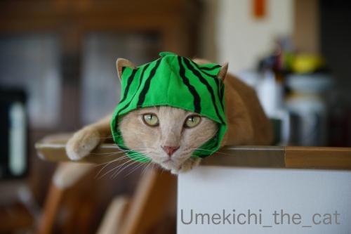
札幌に住んでいるときはスイカなんて滅多に食べませんでした。
（理由は私がそんなに好きじゃなかったからw）
結婚後は買ったことすらなかったのです。
おすそ分けでもらったのを「あるのなら食べる」感じ。
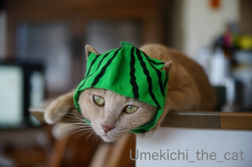
が、大阪に住み始めて初めての夏
あまりの暑さにバテそうになっていた時に食べたスイカがこの上ない美味しさで！
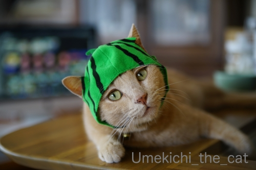
みずみずしくてカリウムたっぷりのスイカは暑い地域で食べてこそ
醍醐味が味わえるんだなと思ったものです。
この夏も桃と並んで頻繁に食べましたよ。
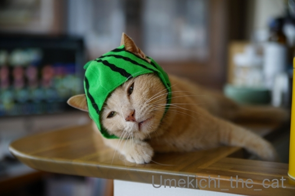
スーパーの果物売り場ではイチジク、ぶどう、なし、栗と晩夏から初秋の果物が主流になっていますけど
こう暑くてはまだまだスイカも美味しくいただけそうです。
9月8日（日）現在時刻13:20分、我が家の付近は35.2℃の表示(ｰ ｰ;)
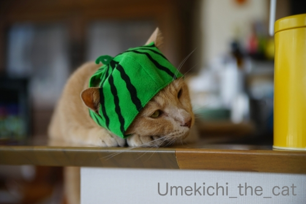
![[猫]](https://blog.ss-blog.jp/_images_e/101.gif) すいかぼうしかぶっても すずしくはならへんなぁ・・・
すいかぼうしかぶっても すずしくはならへんなぁ・・・
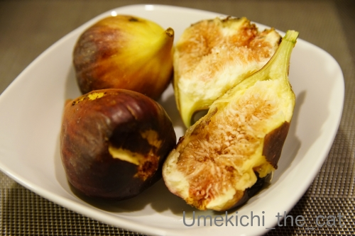
この時期はイチジクも楽しみの一つです。
今年の様な残暑の厳しい年の方が味の濃い完熟イチジクが出回る様な気がします。
このひと山で¥390也。お手頃でしょ![[手（チョキ）]](https://blog.ss-blog.jp/_images_e/87.gif)
 ↑ガブッと一押し↑
↑ガブッと一押し↑
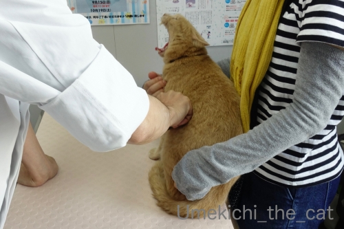
7日は梅吉の定期診察の日でした。
7月の膀胱炎通院の時にエコー検査をしているので
今回は触診と問診と年に一度のワクチンちっくん。
獣医さんに触られて「シャーーーッ！」と言っている様に見えますが
口を開けているのはあくびをしているから(⌒-⌒;
舌が出ているのが分かりますか(*>艸<)
この状況であくびするとはねぇ。。。
「うぅーわぁー」怒るのですが怖がってはいない様子の梅吉さんwww
今回、体調については体重の増加を相談。
思い当たるのはフードを変えたこと、膀胱炎の薬を飲ませるのにパウチ食の頻度が増えたこと
そして真夏の間あまり動かなかったこと。
フードをグレインフリーに変えたと話すと「う〜〜〜〜〜〜〜ん・・・」と獣医さん。
ちなみにグレインフリーとは穀物を使わないフードのことです。
猫は穀物をうまく消化出来ないとの考えからグレインフリーフードが作られています。
では穀物を与えない方が良いのか？と言うと必ずしもそうではないらしい。
穀物の使用箇所（小麦でいうとふすまや胚芽のような区別）や
加工の仕方によっては消化の良いものになり良質の栄養素となるとも聞きます。
この辺りのペットフードのあれこれ、メーカーの思惑も絡んでるだろうし
ややこやしくて簡単に書けることでもないので気になる方は調べてみてね。
私が梅吉にグレインフリーを与えてみたのは
これまでのフードに問題があったわけではなく
「良質な肉をたくさん使っていて体に良いかな？」くらいの単純な理由だったのですが・・・
グレインフリーのフードは穀物を含むフードに比べて脂質の割合が多いと獣医さんの指摘。
梅吉は脂肪をうまく代謝できない体質でそれを改善するために薬を飲んでいます。
そこに高脂質のフードを与えてしまったなら・・・良いわけないですよね。
落ち着いてきていたあごニキビが最近また目立つ様になったものこれが原因かと。
（あごニキビは高脂血症ぎみの子に出来やすいと言われています）
今与えているフードと以前与えていたフード
成分表を見比べると確かにグレインフリーの方が脂質の割合が多いのです。
「体に良さそう」だけで脂質の量まで確認していなかったと反省、反省です。
フードは早速以前与えていたものに戻しました。
今回体重は5050gだったので半年くらいかけて300gくらい減量できれば良いかなと思っています。
グレインフリーのフード、健康体の子に与えるなら良いフードなんですよ。
梅吉の様な体質の猫には合わないと言うだけで
グレインフリーの品質を否定しているわけではないのでその点はご留意くださいね＾＾
穀物を含む・含まないに関しても使ってるお肉の質にしても
その他諸々気になる事がたくんさんあってフード選びは本当に難しいです・・・
元気で長生きしてほしいと思うと食は重要。
少しでも体に良いものをと思うと気持ちは揺れまくるのです。。。
近辺にお住いの方々に被害や事故等ありませんように。
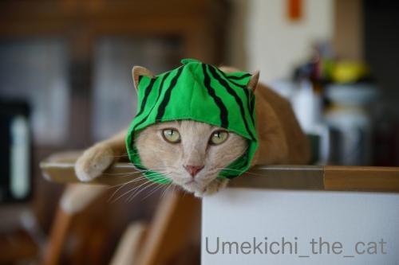
札幌に住んでいるときはスイカなんて滅多に食べませんでした。
（理由は私がそんなに好きじゃなかったからw）
結婚後は買ったことすらなかったのです。
おすそ分けでもらったのを「あるのなら食べる」感じ。
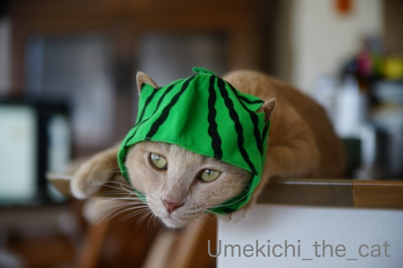
が、大阪に住み始めて初めての夏
あまりの暑さにバテそうになっていた時に食べたスイカがこの上ない美味しさで！
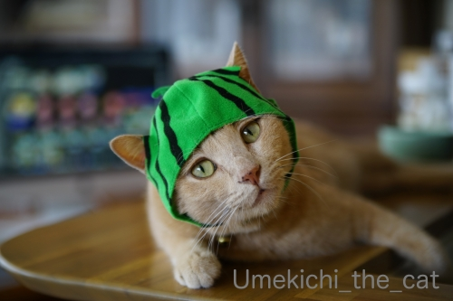
みずみずしくてカリウムたっぷりのスイカは暑い地域で食べてこそ
醍醐味が味わえるんだなと思ったものです。
この夏も桃と並んで頻繁に食べましたよ。
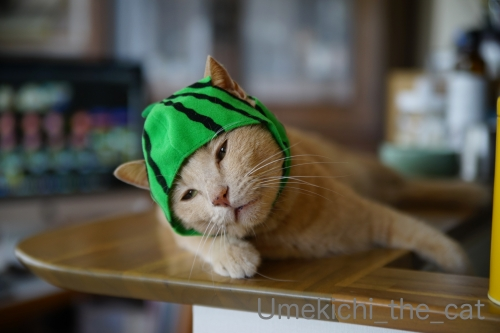
スーパーの果物売り場ではイチジク、ぶどう、なし、栗と晩夏から初秋の果物が主流になっていますけど
こう暑くてはまだまだスイカも美味しくいただけそうです。
9月8日（日）現在時刻13:20分、我が家の付近は35.2℃の表示(ｰ ｰ;)
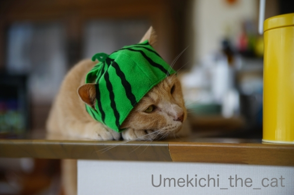
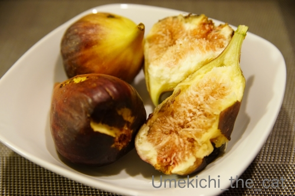
この時期はイチジクも楽しみの一つです。
今年の様な残暑の厳しい年の方が味の濃い完熟イチジクが出回る様な気がします。
このひと山で¥390也。お手頃でしょ
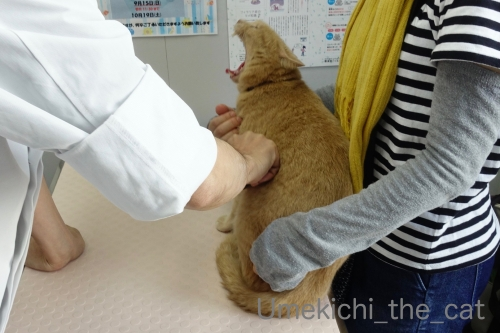
7日は梅吉の定期診察の日でした。
7月の膀胱炎通院の時にエコー検査をしているので
今回は触診と問診と年に一度のワクチンちっくん。
獣医さんに触られて「シャーーーッ！」と言っている様に見えますが
口を開けているのはあくびをしているから(⌒-⌒;
舌が出ているのが分かりますか(*>艸<)
この状況であくびするとはねぇ。。。
「うぅーわぁー」怒るのですが怖がってはいない様子の梅吉さんwww
今回、体調については体重の増加を相談。
思い当たるのはフードを変えたこと、膀胱炎の薬を飲ませるのにパウチ食の頻度が増えたこと
そして真夏の間あまり動かなかったこと。
フードをグレインフリーに変えたと話すと「う〜〜〜〜〜〜〜ん・・・」と獣医さん。
ちなみにグレインフリーとは穀物を使わないフードのことです。
猫は穀物をうまく消化出来ないとの考えからグレインフリーフードが作られています。
では穀物を与えない方が良いのか？と言うと必ずしもそうではないらしい。
穀物の使用箇所（小麦でいうとふすまや胚芽のような区別）や
加工の仕方によっては消化の良いものになり良質の栄養素となるとも聞きます。
この辺りのペットフードのあれこれ、メーカーの思惑も絡んでるだろうし
ややこやしくて簡単に書けることでもないので気になる方は調べてみてね。
私が梅吉にグレインフリーを与えてみたのは
これまでのフードに問題があったわけではなく
「良質な肉をたくさん使っていて体に良いかな？」くらいの単純な理由だったのですが・・・
グレインフリーのフードは穀物を含むフードに比べて脂質の割合が多いと獣医さんの指摘。
梅吉は脂肪をうまく代謝できない体質でそれを改善するために薬を飲んでいます。
そこに高脂質のフードを与えてしまったなら・・・良いわけないですよね。
落ち着いてきていたあごニキビが最近また目立つ様になったものこれが原因かと。
（あごニキビは高脂血症ぎみの子に出来やすいと言われています）
今与えているフードと以前与えていたフード
成分表を見比べると確かにグレインフリーの方が脂質の割合が多いのです。
「体に良さそう」だけで脂質の量まで確認していなかったと反省、反省です。
フードは早速以前与えていたものに戻しました。
今回体重は5050gだったので半年くらいかけて300gくらい減量できれば良いかなと思っています。
グレインフリーのフード、健康体の子に与えるなら良いフードなんですよ。
梅吉の様な体質の猫には合わないと言うだけで
グレインフリーの品質を否定しているわけではないのでその点はご留意くださいね＾＾
穀物を含む・含まないに関しても使ってるお肉の質にしても
その他諸々気になる事がたくんさんあってフード選びは本当に難しいです・・・
元気で長生きしてほしいと思うと食は重要。
少しでも体に良いものをと思うと気持ちは揺れまくるのです。。。

カフェオレ色の梅吉

梅吉 2023年8月10日 永眠


梅吉と出会った譲渡会

犬猫の理由なき殺処分ゼロ
妄想広告
UMEKICHI 光

爆発的に早い！
時々攻撃的！
Thanks to Mr.Boss365
爆発的に早い！
時々攻撃的！
Thanks to Mr.Boss365

スイカ帽子の梅吉くん、リラックスしまくってますねー(笑)
３枚目の写真なんてモデルになりきってるじゃない！！^^
そっかー、梅吉くんにはグレインフリーのフードは合わなかったのですね。
やっぱり猫それぞれで体質が違うものね。
うちは、グレインフリーのフードをメインであげるようになってから
うみのうんPの調子がすごく良いの。
でもカロリーも高めだから、低カロリーのカリカリも少し混ぜてあげてます。低カロリーのカリカリの分量が多くなると下痢になるから難しい(笑)
あおはグレインフリーのフードだけで体重維持もうまく出来てるので
これからも続けようかなって思ってます^^
by リュカ (2019-09-09 00:31)
スイカ帽子はお耳の出るところがあるのが良いですね。
遅くなりましたがやっとインスタ登録できました。これで梅吉さんフォローできます。(自分は写真アップする気がないんですけど)
うちはグレインフリーでコバンのハゲが治ったしドンの毛並みも良くなりました。カロリーは前のフードとほほ同じです。
by zombiekong (2019-09-09 01:34)
記事を読みながら画像を見ているともう梅吉くんがスイカにしか見えません(笑)
北海道ではスイカをあまり食べないことにビックリ！
そのぶんメロンが主流なんですかね。
健康食で梅吉くんはこれからも長生き確定です(^^♪
by yamatonosuke (2019-09-09 01:35)
ちょこんと出たお耳が何とも言えないです＾＾
こちらも昨日は35℃超えの猛暑日で
夜の9時に室温が33℃もありました。
今日も同じように暑くなるらしいです＾＾；
by ぽちの輔 (2019-09-09 06:53)
梅吉さん、スイカ帽お似合いですよ^^
海水浴に行くのかなあ？？？
by ニコニコファイト (2019-09-09 07:08)
梅吉さん、キチンと帽子をかぶってお利口さんですね。とても似合ってます(^_^)
土地柄、スイカは買うよりも頂く方が多いので今の時期の冷蔵庫にはたくさん入っています。家族が少ないので、ひと玉食べるのにも時間がかかってしまいます。
by kou (2019-09-09 07:56)
梅吉さん、スイカ帽子お似合いです♪
嫌がらずに被ってますねー。いろいろコスプレにもチャレンジできそう。
ちなみに私はスイカ大好き！しかしスイカも意外と高くてーー(涙)
お医者さまで大あくび。大物だわっ！舌、見えましたよ！
フードも体質と合わせていろいろ考えなくちゃですね。
人間もよく「体にいい」の一言で片づけちゃう人が多いけどそれは違う！っていつも思ってるんですよね。ニャンコも同じ。
by ChatBleu (2019-09-09 07:57)
梅吉さん、スイカ帽子まで完璧に着こなし（被りこなし？）ちゃうんですね( ^ω^ )
スイカ、私もあまり食べませんがかみさんが何年か前に買ったスイカが
とっても甘かった記憶があるのですが、産地も何も覚えてなくて(⌒-⌒; )
で、毎年「あの甘さのスイカを見つける！」と何度か買ってますが
未だに満足しないみたいですw
病院であくびが出来るなんて梅吉さんってば、さすが余裕ですねぇ=(^.^)=
by ニッキー (2019-09-09 08:24)
スイカ梅吉さん！かぶりつきたくなるほど
可愛過ぎますねぇ～(#^.^#)
フード問題！我が家でも悩ましいです！
高タンパクのフードをあげてましたが
あまり動かないＬｅａなので‥脂質も多いし・・
グレインフリー！昨今、ペットフードも
たくさん種類がありますが
グレインフリーがワン・ニャンにとって
良いことなのか？
まだ年数もたっていないので
将来どのような結果になるのか
分かっていないそうです。
by きぃ (2019-09-09 08:52)
梅吉さん、スイカ帽ですね。
充電させて貰えませんかでスイカの被り物も人気みたいですね。
診察中に大あくびとは(^^)
by ma2ma2 (2019-09-09 09:44)
スイカ帽子を被ったら、出川とバイクで旅をしないと？（ﾟ□ﾟ）
スイカは、最近食べてないな。
イチジクも全く食べてないしw
by 英ちゃん (2019-09-09 12:11)
スイカ帽からチョロ出のお耳がかわいい～(#^^#)
近所のスーパー、スイカはカットするからだと思いますが糖度表示があるので13以上を探して買います♪
病院であくびとは、梅吉さん、先生に余裕を見せつけてあげましたね！
キャットフードも本当にイロイロ種類があって悩んじゃいますよね。
その子の好みや体質がありますし。ちなみに今こてつのメインフードはグレインフリーではないし、酸化防止剤も入っていますが、食い付きよく体調もずっと良好^^
一度毛玉ケアフードをあげたらお腹をこわしたので、ウチのには合わないみたいです。
本来肉食だから・・という理由は確かにシンプルで納得しやすく私も心がぐらぐら揺れました(^▽^;)
ウチのはもうシニアなので今からグレインフリーへ切り替えは難しいかな～腎臓に負担かかりそうですもんね。病院の先生も意見は様々です。
手作り食は逆に栄養が偏ってダメだというし、正直、何がいいかホントわかりません・・・。美味しく食べて元気でいてほしい、愛する我が子を思えばこそ、悩みは深まります。
by ゆきち (2019-09-09 12:46)
こんにちは。
梅吉くん！！スイカ帽子？似合っています。
スイカではなく「水泳」キャップにも見えますが・・・
耳が出てジャストフィットですね。すいかぼうし？暑いと思います（笑）
スイカ？スーパーでは見かけない感じです。
イチジクも食べる機会少ないですね。テザート類で食べる程度です。
フード関連は色々難しいですね。「グレインフリー」勉強になりました。
現在グレインフリーのカリカリで食い付きが良いですね。
小生猫太っているので、カロリーを気にしています。
フード選びは難しいですが「長生きの為」に踏ん張ってください！？(=^･ｪ･^=)
by Boss365 (2019-09-09 13:05)
可愛いね〜(^^)♪♪
by チャー (2019-09-09 13:23)
梅吉さんのスイカ帽、似合ってます。
イエ、梅吉さんはスイカになりきって名演技です（笑）
チョコンと被っているのでは無くて、
on the eyeが証拠です（笑）
スイカ、子供達が小学生から中高生の頃、
10年くらいの期間、
夏は2日に1回、丸ごとスイカを注文していました。
声だけで配達してくれました（笑）
夫が率先して食べて、みんなみんな若かった！
今はゆきちさんのように13（糖度）を見て買います。
ちぃさん
症状が軽いうちに（半年で300g減量できるくらいの）
良いときに獣医さんに行ったと思います。
by kiki (2019-09-09 15:35)
やはり被り物は秀逸ですね〜 ^ ^
by 小松達也 (2019-09-09 18:05)
私も数日まrの記事でkontentenさんが、入れてくれたコメでそもそも猫が食べていなかった穀類が原因で腎臓病が・・・というのを読んで、おお！穀物由来のフードでない方が良いのか？と思ったので、Naoちゃんのご飯はウェット率が高くなっていました。今のところは症状は安定しているので、さほど気にはしていないのですが、やはりヘアボールコントロールのカリカリではないので定期的に毛玉を吐く作業が辛そうで(;^_^A 愛猫のご飯は悩ましいですよね。人間も小麦アレルギーでグルテンフリー食材を求めるのですから、猫にもそれなりのアレルギーがあるでしょうし、模索は果てしなくキリがないですね
少しでも長く一緒にいたいから、最善を求めますね。
by marimo (2019-09-09 21:07)
子どもの頃、近所になっているイチジクを失敬して食べるのが楽しみでした。
食べ物の影響が少なからずあるんですね。
by riverwalk (2019-09-09 21:19)
うーん、猫様のご飯は難しいですね。
うちのやつら、いい加減な体重測定をしている限りは0.3kgは半年もかからず増減します...
by tama (2019-09-09 21:26)
スイカ帽子お似合いですね♪ ^^)
スイカ、若い頃は夏によく食べていたのに、最近とんと食べなくなりました。
イチジクいまだ食べたことがありません。。。
グレインフリーというフードがあるのですね。
ほとんど「猫又」となったウチの猫にあげても大丈夫なのかなあ。。。
by yes_hama (2019-09-09 22:04)
梅ちゃんかぶりもの嫌がらないのですね！
うちの子は動物病院の先生が好きで、
尿道にカテーテル入れられても、ゴロゴロ出して
甘えていました。もちろん私にもご相伴預かります？の
時には膝でゴロゴロでしたけど・・・
by caterham_7 (2019-09-09 22:14)
梅吉君がスイカ被ってるってことはちぃさん食べようとしてますね(笑)
by palpal (2019-09-10 09:19)
スイカ帽なのですが、なぜか一枚目をパっと見たとき
ラムちゃんな感じがしました(*´艸｀*)
梅吉だっちゃ♪
うちはガチャ品のイチゴ帽があるのですが、スイミングキャップ
にしか見えませんでしたー(*￣m￣)ﾌﾟｯ
診察中に大あくびとは大物ですねーｗｗ
フードは難しいですよね。うちは食欲不振だった時にシーバを
与えすぎて尿路結石になっちゃいました。高カロリーなのが
よくなかったみたいでして。それから腎臓サポート食のみ。
その後問題ないので、そのまま食べ続けてもらっています。
長生きしてもらいたいですからねー＾＾
by カトリーヌ (2019-09-10 15:41)
シーバ、高カロリー↑ なんですか？実はくーちゃんの大好物で、
最近、カリカリにシーバを混ぜてやらないと、食いつきが
悪くて、、。大人フードと子供フードは、別の場所にあるんだけど、
きーちゃんまで子供フードを食べて、なんか太ったみたいに見えるし。
グレインフードは気になりますが、近所で手に入らないので、ネットで
買うしかないし。でも消化によいというフードや、消化剤を与え続けて
少しづつましになってきてる気がします。
by nachic (2019-09-12 10:43)
スイカ梅吉さんがラブリーすぎて待ち受け画面にしたいぐらいです。
私史上最高においしいスイカは北海道マラソンのエイドで出てくる冷え冷えの！
by liang (2019-09-12 18:58)